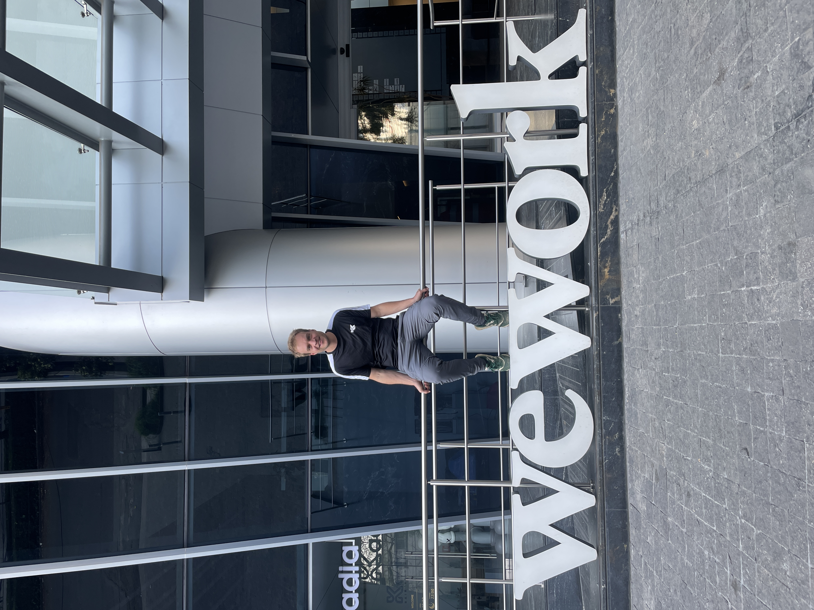
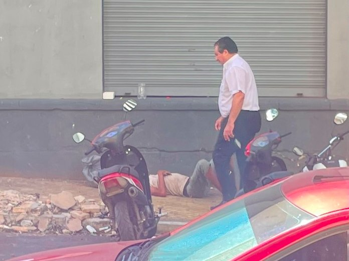

22 The residence
permit
Wonderful weather in Mexico City,
unexpected shortness,
return trip Paraguay

I have been living as a digital nomad for two years now, wandering through South America. Of course, I have gained a lot of experience there, which has helped me to know better and better what works for me and what doesn't. I have moved so often that it seemed wonderful to finally have a permanent city for a longer period of time. Still, it stays in the back of my mind that I applied for a residence permit in Paraguay because I was staying there for an extended period at the time and it was formally required. That same permit might also come in handy in the years to come, given my lifestyle as a digital nomad. However, the thought of having to go back there soon also hinders the integration here in Mexico, because it is still unclear when I will get the green light to travel to Paraguay. I try not to think about it too much and take it up, just like in Barcelona and Asuncion, by visiting a bachata party in Mexico Park in the hope of meeting some new people here. The Mexican boy Ernesto, who I met while backpacking in the southern Mexican province of Yucatan, is very involved and takes me on a hike near the volcano Popocatepetl, 1.5 hours from Mexico City. Mexico City makes a big impression on me. You always end up in a new part with new skyscrapers or slums as far as the eye can see. Getting used to a new city takes time and that certainly applies here, because because the city is so immense, you underestimate the distances. If you look at the map and think you can walk that small distance, you can easily spend an hour walking. In Mexico City you also have shared rental bikes spread throughout the city. That is a solution, but then scanning with your mobile phone must work, and the bike stations must not be empty but also not full when you want to park your bike. Especially when you need such a rental bike during rush hour, it is impossible to get one. Ernesto explains to me how the bikes work and we also take a ride on the metro together, so that I can use it too. One day you are taking steps and the next moment you feel miles away from integration in this mega city when you walk around as a boy from Bavel and are amazed by what you see.
 Although Ernesto is a huge pillar of support, even though we have only known each other for a few weeks, contact with everyone does not go so smoothly. Since day 1 of the expat experience, about 3 years ago, I have cherished the wish to work in a WeWork office one day. WeWork is a company with hypermodern coworking offices spread all over the world. Now the moment has finally arrived. Although unfortunately there was no warm welcome. The receptionist really did not seem to care at all whether or not I would take out a subscription. In fact, a week had passed and while she promised to email me every day, she didn't and I had to wait half an hour every morning at the reception at the foot of the flat because they couldn't get in touch with WeWork. My patience was starting to wear thin and I asked if we could complete the registration. I was told again, "yes, haven't you checked your email yet?" while I still hadn't received anything. She seemed to be putting the problem on me and it felt a bit like I was a burden to her while I wanted to support their company with the best intentions. Is this a Mexican thing or is this part of life in a cosmopolitan city? I ask myself. Where people in Paraguay approach you very directly and ask you a lot of questions, here no one seems to look at you. Although the people in Paraguay were so helpful that it was sometimes difficult to even go out on the street. Maybe a mix of both cultures wouldn't be a bad idea, I joke to myself. A supermarket employee in Mexico City looks at me as if I'm from another planet and walks away out of discomfort when I ask what time the bread will be on the shelves. Especially in the first few weeks, many questions arise and you ask the people at the reception for information. Maybe it's not entirely fair to tar the entire Mexican population with the same brush, but the disinterest and the total lack of empathy is what I remember most. I had really been looking forward to the Mexican food, a nice plate of rice, beans and a burrito. Maybe I just haven't found the right places yet, but the only things I come across are fancy restaurants and greasy enchiladas. A kind of snack for in between, but anything but a real hot meal that you can live on for the rest of the day. I ask at Burger King "Hello, what do you advise me to eat, I'm really hungry." To which the man says "Whopper". A correct answer but sometimes it would be nice if someone would think a little more with you about the options. That also makes the integration tough because you get the feeling that you are running into a wall and it is too much to ask for the people.
Although Ernesto is a huge pillar of support, even though we have only known each other for a few weeks, contact with everyone does not go so smoothly. Since day 1 of the expat experience, about 3 years ago, I have cherished the wish to work in a WeWork office one day. WeWork is a company with hypermodern coworking offices spread all over the world. Now the moment has finally arrived. Although unfortunately there was no warm welcome. The receptionist really did not seem to care at all whether or not I would take out a subscription. In fact, a week had passed and while she promised to email me every day, she didn't and I had to wait half an hour every morning at the reception at the foot of the flat because they couldn't get in touch with WeWork. My patience was starting to wear thin and I asked if we could complete the registration. I was told again, "yes, haven't you checked your email yet?" while I still hadn't received anything. She seemed to be putting the problem on me and it felt a bit like I was a burden to her while I wanted to support their company with the best intentions. Is this a Mexican thing or is this part of life in a cosmopolitan city? I ask myself. Where people in Paraguay approach you very directly and ask you a lot of questions, here no one seems to look at you. Although the people in Paraguay were so helpful that it was sometimes difficult to even go out on the street. Maybe a mix of both cultures wouldn't be a bad idea, I joke to myself. A supermarket employee in Mexico City looks at me as if I'm from another planet and walks away out of discomfort when I ask what time the bread will be on the shelves. Especially in the first few weeks, many questions arise and you ask the people at the reception for information. Maybe it's not entirely fair to tar the entire Mexican population with the same brush, but the disinterest and the total lack of empathy is what I remember most. I had really been looking forward to the Mexican food, a nice plate of rice, beans and a burrito. Maybe I just haven't found the right places yet, but the only things I come across are fancy restaurants and greasy enchiladas. A kind of snack for in between, but anything but a real hot meal that you can live on for the rest of the day. I ask at Burger King "Hello, what do you advise me to eat, I'm really hungry." To which the man says "Whopper". A correct answer but sometimes it would be nice if someone would think a little more with you about the options. That also makes the integration tough because you get the feeling that you are running into a wall and it is too much to ask for the people.
I'm eating tacos and I feel like I'm not being taken completely seriously. "Are you looking for a woman?" the people next to me laugh. Now I've heard that sentence countless times and I like a joke but sometimes I just want to eat and not always be the center of attention. Where speaking Spanish is so natural in Paraguay, people here do everything they can to steamroll over you in English, even if you've already spoken Spanish to them. That also takes away some of the fun of speaking Spanish, where it was so natural in Paraguay, people here quickly notice it. My Airbnb is in the business district of Polanco and because wages are so low in Mexico there are countless jobs that would have been cut back in Europe long ago. People who help you pack your groceries, people who help you fill up with gas, and a doorman who guards my Airbnb. Some people are incredibly friendly, but because people often come from the suburbs, the cultural difference is very big. For example, the doorman of my apartment spoke to me and said "You've been so serious these days". To which I replied "I understand that you like to have a chat, especially since you've been here all day. It's just busy at my place, so I don't always have time to chat. I hope you understand that!"
One morning I turn on the tap and there appears to be no more running water in the building. Because of this, I accidentally leave the tap open when I leave the building. As a result, when I come back home later that day, there is running water again, and the entire living room is flooded with water. With a bucket I try to quickly get the water back into the sink and I hope no one notices but at 00:00 at night the phone rings and at 01:00 the cleaning team arrives. It feels a bit strange that when I need something, people often react curtly, and now within no time a whole platoon is ready to make everything right again as quickly as possible. Fortunately, the airbnb contact person is fair in the distribution of the claim because the water had dripped all the way down to the floors below and apparently they also had to cancel a number of reservations. I didn't think I would say it but I almost long for Paraguay where life in that attic room was so wonderfully simple and the people on the street did everything they could to help you.
I am offered to live in Roma Norte, the trendy district of Mexico City, comparable to Ginneken in Dutch city Breda, where everything is also within walking distance. I decide to do it and move a bit closer to the center, with more cafes and where the Burgundian life of Mexico City takes place, including many homeless people who of course want to take advantage of the wealthy tourists. I visit the WeWork office in this district, but I still find it difficult that the people are having such a good time together while I don't know anyone there yet. I ask if there is anything organized at the WeWork so that I can meet some people. And the receptionist says. 'Just look at the agenda in the app.', which turns out to be completely empty. It seems to take an awful lot of energy to get something done here. I have an apartment where I have always dreamed of living one day. My dream palace. And yet it feels very empty in the evening. Although there are definitely some points of contact, it sometimes feels like loose sand. I will have to find out whether it will work here or not. A big plus to Mexico City is in any case the dancing. That is very nice here. On Wednesdays there is always a nice bachata party in café Busan and in the weekends you can arrive at 12:00 in the afternoon in the "Park de Mexico" to dance bachata and salsa. It is also sometimes a bit of a trial and error when it comes to dancing, but I have had a lot of fun here. And a big plus to Mexico City is that you can also dance here during the day instead of having to wait until late at night. In the end, it is of course not necessary to become friends with the entire city. If you can join a few nice people, that is soon enough. The same goes for the Kizomba lesson, which I had already started in Paraguay. I do that here on Fridays and I think it is a great dance, although it is very difficult to lead well.
When I had just settled into my new apartment in Mexico City for a few weeks, I received a message from Paraguay that I could come and complete my residence permit. Of course, this was not a nice time to have to go there so suddenly, because I already had my hands full getting used to Mexico City. But on the other hand, it could be better to have it arranged, so that I could then focus completely on Mexico. So I left for Paraguay in a hurry, with stops in Lima and Santiago. It was so strange to be back in the capital of Paraguay Asuncion. The smell of the tropics and the burning sun of 40 degrees, and the friendly people with the many questions. Through a Digital Nomads app group in Paraguay I got in touch with Fransico from Asuncion. I had largely arranged the first part of the application for the residence permit almost a year ago myself. That was already an absurd task, and now a whole pile of extra documents were needed. This man Francisco really helped me so much. It is so nice to have someone next to you and to be able to arrange things together. Also with his help it was an unprecedented experience to have stamps put in from police station to government building. With a big smile on my face I was finally able to pick up my Paraguayan identity card.
Driving through the center of Asuncion I looked out the window again and I just can't believe that I really lived there for almost a year. The sidewalk along the main square is covered with tents where entire families are sitting on mattresses. At any moment you can walk around the corner and see a starving person lying on the street. I really feel sorry for the people, because the taxi drivers emphasize again how corrupt the government is. Now that I was in Paraguay anyway, I thought about visiting the Foz de Iguazu waterfalls. But what is the value if you can't share it with someone? I'm a bit done with always being alone at highlights. Why don't I visit the Iparoma farm, in the north of Paraguay where I did volunteer work for 1.5 months a year ago. It was super special to see Marylin and Gerardo from the farm again after a year and unique to be able to talk to them about memories. The place is the same but the time I was in was so different because I really didn't have a dime, was still learning Spanish and I was still programming with Ramon through trial and error. I even remember that I discovered Bittensor there and I wanted to talk about it with the owners of that farm. I remember very well that the conversation lasted 5 minutes and suddenly we were talking about the indigenous population of Paraguay, the Ayoreos. Oh well, I was just happy that I could talk to them then, but of course it also illustrates how difficult it is to get your point across as a computer guy. Now that I'm back in the Paraguayan Chaco I remember the enormous route that I took 2 years ago: Mancora, Tarapoto, Cusco, Puerto Maldonado, Uyuni, Sucre, Cochabamba, Cobija, Filadelfia and Asunción. I'm itching to do the route again. It was great. But no, now a new challenge awaits me in Mexico City, with which I still have a bone to pick.